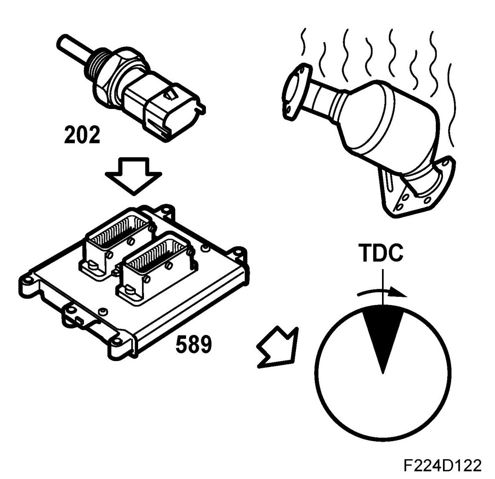

Catalytic Converter Heating Ignition
Catalytic Converter Heating Ignition

In order to heat the catalytic converter as fast as possible after starting, the ignition will be retarded.
Ignition timing together with a high idling speed means that the exhaust temperature will rise, which, in turn, heats the catalytic converter much faster. The function is active when starting and the coolant temperature is between -8 degrees C and 35 degrees C.
The function is active for up to 2000 combustions at low coolant temperatures and for a shorter period at higher coolant temperatures.
The ignition retardation is dependent on load and engine speed, a typical ignition timing is around 10° after top dead centre (ATDC).